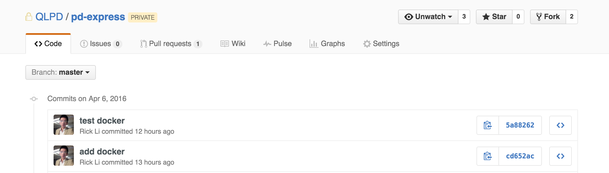
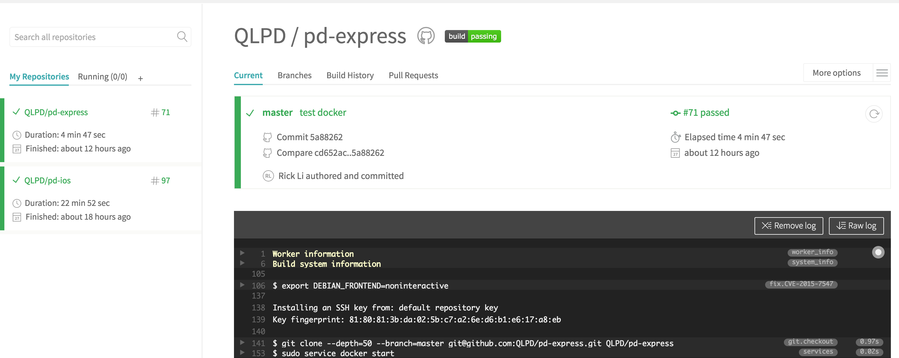
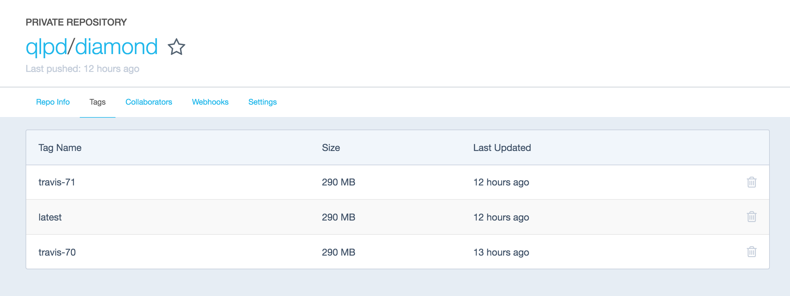
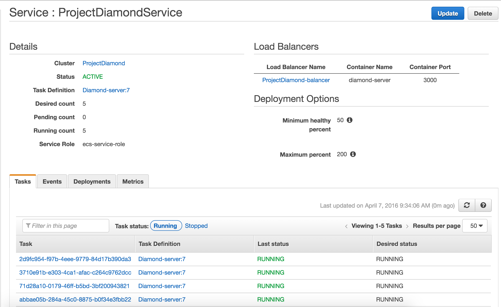

Diamond Architect
A W S

Services we use
EC2 instance - virtual server hosting
AWS VPC - virtual networking environment
EC2 Container Service - Docker support
AWS Aurora - Database
AWS Simple Storage Service
AWS Cloudfront CDN
Workflow
Code push to github
CI/CD
Running all test cases, once it passes, push to docker registry
Push to docker hub
language: node_js
sudo: required
services:
- docker
node_js:
- "node"
before_script:
- npm install -g gulp
script:
- ENV=test gulp test
after_success:
- export DOCKER_EMAIL=rick.li@qantasloyalty.com
- export DOCKER_USER=qlpd
- export DOCKER_PASS=qantasloyalty
- docker login -e $DOCKER_EMAIL -u $DOCKER_USER -p $DOCKER_PASS
- export REPO=qlpd/diamond
- export TAG=`if [ "$TRAVIS_BRANCH" == "master" ]; then echo "latest"; else echo $TRAVIS_BRANCH ; fi`
- docker build -f Dockerfile -t $REPO:$COMMIT .
- docker tag $REPO:$COMMIT $REPO:$TAG
- docker tag $REPO:$COMMIT $REPO:travis-$TRAVIS_BUILD_NUMBER
- docker push $REPO
Docker hub image
AWS takes care the next
Step1: pull the docker registry and deploy to EC2 instances Benefits gained
1. No downtime
2. Fault tolerant
Additional
* Load balancer distributes incoming application traffic across multiple Amazon EC2 instances
* Auto Scaling ensure that you are running your desired number of Amazon EC2 instances
* S3 provides with secure, durable, highly-scalable cloud storage
* Cloudfront give an easy way to distribute content to end users with low latency, high data transfer speeds
Overall Architect
Missing parts
1. Performance test
2. Environment separation